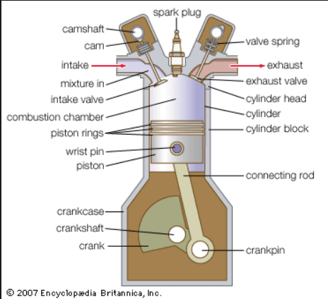

With issues caused by global warming and pollution becoming more prevalent society needs to cut down on CO2 emissions
and find environmentally friendly alternatives for many of our energy sources. This also includes finding alternatives
for the automobile engine. By looking at positives and the negatives of the two main hydrogen engines, the hydrogen
internal combustion engine and the hydrogen fuel cell, this article aims to determine if hydrogen engines are a suitable
alternative for natural gas engines. Through the findings of this article, it can be determined that both engines can be
seen as carbon emission free, but they have issues regarding the storage of hydrogen and the hydrogen fuel cell is very
expensive to manufacture. The conclusion that can be drawn is that hydrogen engines need more research and development
to overcome its issues, however when these issues have been resolved hydrogen engines can be a good alternative for
natural gas engines.
Introduction
In the modern day a problem engineers are faced with is the protection of the enviroment. One of the biggest issues to be
solved is finding an enviromentally friendly alternative for automobile engines. To find out if hydrogen engines could be
this alternative, this article looks at the pros and cons of two hydrogen engine types. Firstly, the hydrogen internal
combustion engine and secondly, the hydrogen fuel cell.
Hydrogen Internal Combustion Engine
Hydrogen internal combustion engines (ICE) are in their layout and functionality very similar to natural gas ICEs.
They are made up out of the same main components, such as a cylinder, cylinder head, piston, piston rings, connecting rod,
crankshaft, crank case and a flywheel. The principle of how a hydrogen combustion engine produces energy is also the same
as in a natural gas ICE. Through inlet valves hydrogen and air are pushed into the combustion chamber, where with the help
of an igniter the fuel is ignited, causing a combustion. The force of the combustion causes the piston to be pushed down,
which forces the crankshaft to rotate (Office of energy efficiency & renewable energy (22nd November 2013)).
Through this rotation different types of machinery can be powered, for example the wheels on a car.

Fig:1 (Encyclopaedia Britannica, 2023)
There are also differences between natural gas ICEs and hydrogen ICEs. A key feature of a hydrogen combustion engine is
that the main product of the combustion reaction is water (Engineering Explained,2018), making it carbon emission free.
However, if the combustion reaction produces enough heat nitrogen-oxide can be produced as a by-product, which is a
pollutant. This can become a problem due to hydrogens characteristics of being easily ignited.
The positive of this aspect is the engine needs less ignition energy (ScienceDirect, no date) and starts quicker.
The problem as mentioned before is if the heat within the combustion engines reaches a high temperature nitrogen-oxide
is formed. On top of that if there is a hotspot within the combustion chamber the gas is more likely to combust
(ScienceDirect, no date), which will cause the engine to miss fire. Another perk of hydrogen as a fuel source is that it
can run on a wide range of air to fuel ratios. This means that per hydrogen molecules more oxygen can be mixed into the
combustion chamber and combustion would still take place. By using a mixture with more oxygen per hydrogen the reaction
produces less heat, which reduces or eliminates the production of nitrogen-oxide (ScienceDirect, no date). The biggest
challenge hydrogen ICEs face is the storage of hydrogen. Because hydrogen has a very low density the fuel tank required to
transport hydrogen would have to be very large (Hosseini, S. & Butler, B.,2019), which would reduce the available space in an
automobile. There are two methods currently in use to store hydrogen. Firstly, in high pressure cylinders and secondly in
liquid cryogenic form. Both methods are not very energy efficient, due to the high energy required to store them in these ways.
Hydrogen Fuel Cell
A hydrogen fuel cell functions by producing electricity to charge an onboard electric motor. It consists of multiple membrane
electrode assemblies, which are put together to make a larger fuel cell block. A membrane electrode assembly is made up of three
parts (Office of energy efficiency & renewable energy, no date). Firstly, the polymer electrolyte membrane, which is a specific
membrane that only allows protons to pass through it. This membrane sits between the catalyst layers that function as the anode
and cathode of the membrane electrode assembly. They are made up of platinum particles dispersed on a base carbon surface area
mixed with ion-conducting polymers, also known as ionomers. The platinum is used as a catalyst. On the anode it causes the
hydrogen electrons to split from the hydrogen electrons and on the cathode, it causes oxygen to react with the hydrogen, causing
the production of water. Lastly the membrane electrode assemblies consist of gas diffusion layer, which allow the reactants
hydrogen and oxygen to be transported. They are made up of a sheet of carbon paper that is partially coated with
polytetrafluoroethylene, which is hydrophobic. This sheet allows gases to diffuse through pores. The way electric energy is
produced is splitting the hydrogen protons and electrons at the anode. The protons can then with the help of the ionomers travel
past the membrane to the cathode, but the electrons are forced to travel along a wire attached from the anode to the cathode.
This causes electricity to be inducted. Once the electrons reach the cathode the hydrogen and oxygen react with one another causing
water to be produced. The water in form of vapour can be diffused through the gas diffusion layer. The produced electricity is used
to power an electric motor.
Fig:2(Thomas, S., Zalbowitz, M., no date)
Like the hydrogen ICE hydrogen fuel cells produce water through its reaction (Office of energy efficiency & renewable energy, no date),
but there is no risk of producing nitrogen-oxide as a by-product. This makes the use of the engine pollutant free. However, there are
two issues with the use and production of hydrogen fuel cells. Firstly, just like with the hydrogen ICEs it is difficult to store
the hydrogen. Because of the difficulty of storing hydrogen cars using a hydrogen fuel cell have limited travel range (Feldman B., 2005).
The second issue with hydrogen fuel cells is the high price of production. Hydrogen fuel cells need a lot of platinum to function and
since platinum is a very expensive metal it is extremely costly to produce hydrogen fuel cells (Feldman B., 2005).
Conclusion
In conclusion although both the hydrogen internal combustion engine and hydrogen fuel cell can be seen as environmentally friendly,
they still face issues, like how to store the hydrogen as well as pricing issues. If these are overcome in the future it could be
possible that hydrogen engines will become a commonly used engine type in the modern world.
References
Encyclopaedia Britannica (2023), gasoline engine Available at:
https://www.britannica.com/technology/gasoline-engine
(Accessed: 20th Oktober 2023)
Engineering Explained (2018), The Difference Between Gasoline And Hydrogen Engines,
18th December, Available at: https://www.youtube.com/watch?v=l6ECwRnJ0Sg&t=15s
(Accessed: 7th Oktober 2023)
Feldman, B. (1st November 2005) ‘Hydrogen fuel cell automobiles’,
The Physics Teacher, 43, pp. 492-495 Available at:
https://pubs-aip-org.surrey.idm.oclc.org/aapt/pte/article/43/8/492/274551/Hydrogen-Fuel-Cell-Automobiles
(Accessed: 14th Oktober 2023)
Hosseini, S. & Butler, B. (18th November 2019), ‘An overview of development and challenges in hydrogen powered vehicles’,
International Journal of Green Energy, 17, pp. 17-37 Available at:
https://www.tandfonline.com/doi/full/10.1080/15435075.2019.1685999#:~:text=Hydrogen-fueled%20ICEs%20(H2ICEs),both%20gas%20and%20liquid%20states
(Accessed: 8th Oktober 2023)
Office of energy efficiency & renewable energy (No date), Parts of a fuel cell,
Available at: https://www.energy.gov/eere/fuelcells/parts-fuel-cell
(Accessed: 10th Oktober 2023)
Office of energy efficiency & renewable energy (22nd November 2013),
Internal Combustion Engine Basics, Available at:
https://www.energy.gov/eere/vehicles/articles/internal-combustion-engine-basics
(Accessed: 10th Oktober 2023)
ScienceDirect (No date), Hydrogen Engine, Available at:
https://www.sciencedirect.com/topics/engineering/hydrogen-engine
(Accessed: 8th Oktober 2023)
Thomas, S., Zalbowitz, M. (no date), ‘Hydrogen fuel cell automobiles’,
The Physics Teacher, 43, pp. 492-495 Available at:
https://pubs-aip-org.surrey.idm.oclc.org/aapt/pte/article/43/8/492/274551/Hydrogen-Fuel-Cell-Automobiles
(Accessed: 14th Oktober 2023)
Conference Presentation: Hydrogen engines: a green alternative?

 Fig:2(Thomas, S., Zalbowitz, M., no date)
Like the hydrogen ICE hydrogen fuel cells produce water through its reaction (Office of energy efficiency & renewable energy, no date),
but there is no risk of producing nitrogen-oxide as a by-product. This makes the use of the engine pollutant free. However, there are
two issues with the use and production of hydrogen fuel cells. Firstly, just like with the hydrogen ICEs it is difficult to store
the hydrogen. Because of the difficulty of storing hydrogen cars using a hydrogen fuel cell have limited travel range (Feldman B., 2005).
The second issue with hydrogen fuel cells is the high price of production. Hydrogen fuel cells need a lot of platinum to function and
since platinum is a very expensive metal it is extremely costly to produce hydrogen fuel cells (Feldman B., 2005).
Fig:2(Thomas, S., Zalbowitz, M., no date)
Like the hydrogen ICE hydrogen fuel cells produce water through its reaction (Office of energy efficiency & renewable energy, no date),
but there is no risk of producing nitrogen-oxide as a by-product. This makes the use of the engine pollutant free. However, there are
two issues with the use and production of hydrogen fuel cells. Firstly, just like with the hydrogen ICEs it is difficult to store
the hydrogen. Because of the difficulty of storing hydrogen cars using a hydrogen fuel cell have limited travel range (Feldman B., 2005).
The second issue with hydrogen fuel cells is the high price of production. Hydrogen fuel cells need a lot of platinum to function and
since platinum is a very expensive metal it is extremely costly to produce hydrogen fuel cells (Feldman B., 2005).